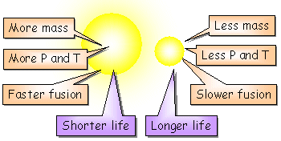
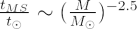

The overall lifespan of a star is determined by its mass. Since stars spend roughly 90% of their lives burning hydrogen into helium on the main sequence (MS), their ‘main sequence lifetime’ is also determined by their mass.
Interactive: Calculate any star's main-sequence lifetime, luminosity, and ultimate fate.
Massive stars need higher central temperatures and pressures to support themselves against gravitational collapse, and for this reason, fusion reactions in these stars proceed at a faster rate than in lower mass stars. The result is that massive stars use up their core hydrogen fuel rapidly and spend less time on the main sequence before evolving into a red giant star.

An expression for the main sequence lifetime can be obtained as a function of stellar mass and is usually written in relation to solar units (for a derivation of this expression, see below):

| where | t⊙ | = | Sun MS lifetime = 1010 |
| M | = | mass of star | |
| M⊙ | = | solar mass |
The lifetimes of main sequence stars therefore range from a million years for a 40 solar mass O-type star, to 560 billion years for a 0.2 solar mass M-type star. Given that the Universe is only 13.7 billion years old, these long main sequence lifetimes for M-type stars mean that every M star that has ever been created is still on the main sequence! The Sun, a G-type star with a main sequence lifetime of ~ 10 billion years, is currently 5 billion years old – about half way through its main sequence lifetime.
Derivation
The luminosity of the star is the energy released per unit time. For main sequence stars, the energy comes from hydrogen fusion and we have:
L = E/t
| where | L | = | the luminosity of the star |
| E | = | energy produced by H burning | |
| t | = | time |
We can use Einstein’s energy-mass equation to calculate the energy produced by hydrogen burning. The mass converted into energy through burning will be a fraction f of the total mass of the star.
E = f M c2 where
| where | E | = | energy produced by H burning |
| f | = | fraction of mass converted into energy | |
| M | = | mass of the star | |
| c | = | speed of light |
Combining the last two equations, we have the following expression for the main sequence lifetime:
tMS ∼ M/L
Using the mass-luminosity relationship for main sequence stars:
L ∼ M3.5
and substituting for L, we have the expression for main sequence lifetime in terms of stellar mass:
tMS ∼ M-2.5
This can be expressed (as above) in solar units:
| where | t⊙ | = | Sun MS lifetime = 1010 |
| M | = | mass of star | |
| M⊙ | = | solar mass |
Note: this expression is an approximation only, and not valid for very massive or very light stars. The main limitation is the use of the single value mass-luminosity relationship for main sequence stars.